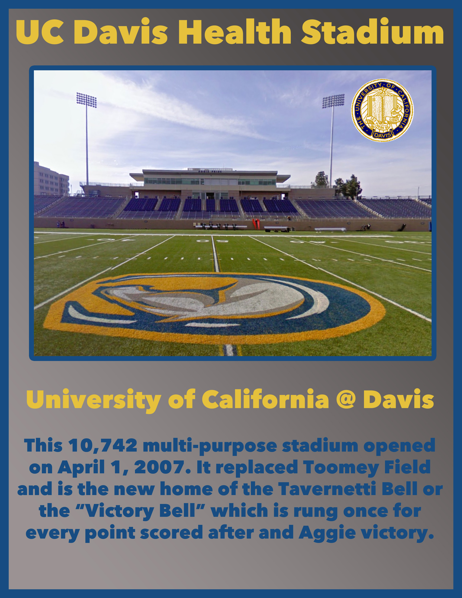
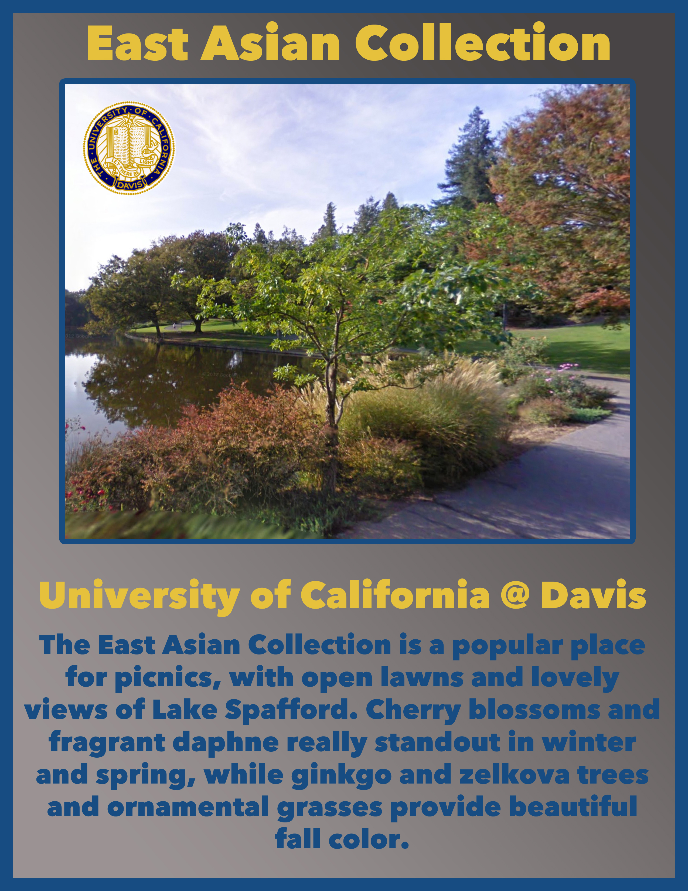
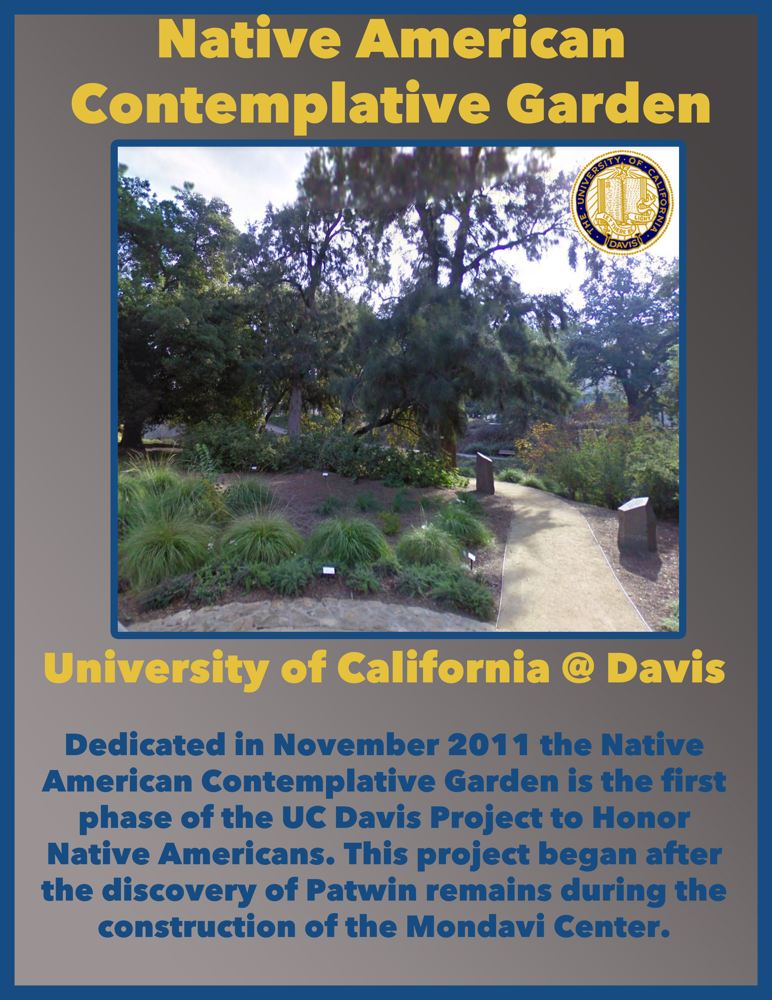
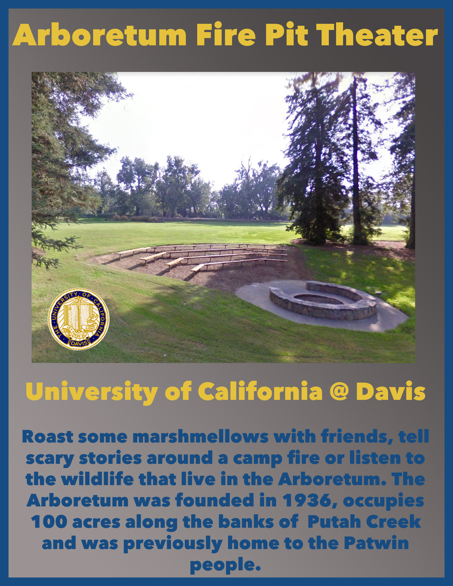
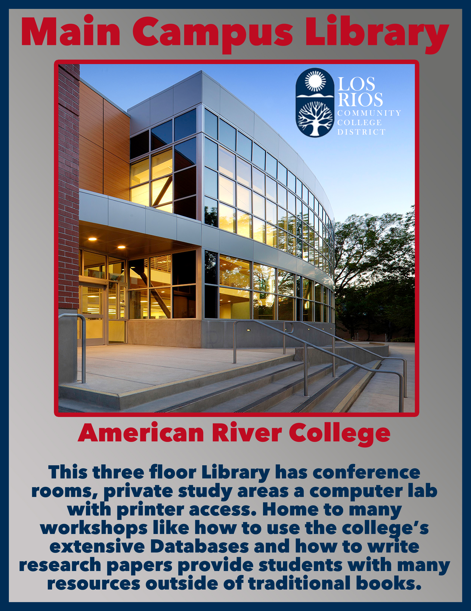
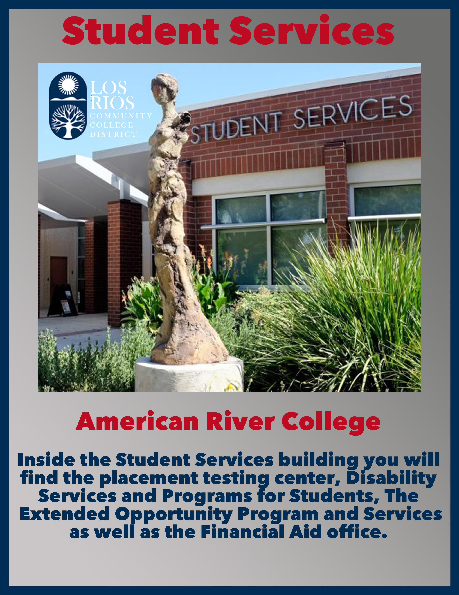
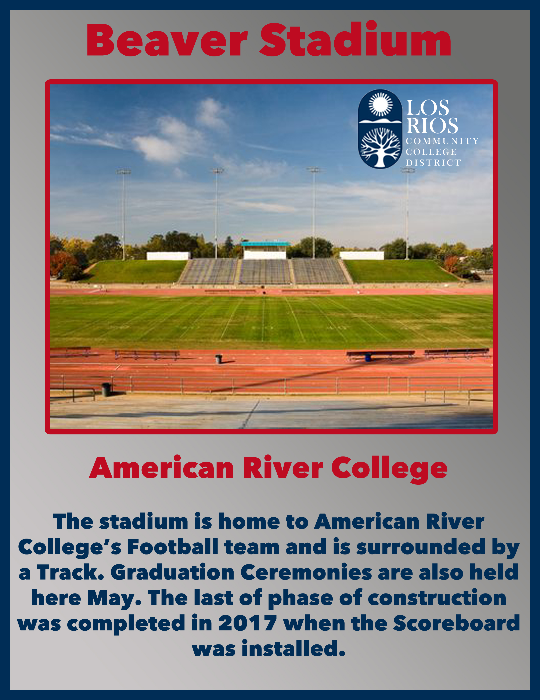
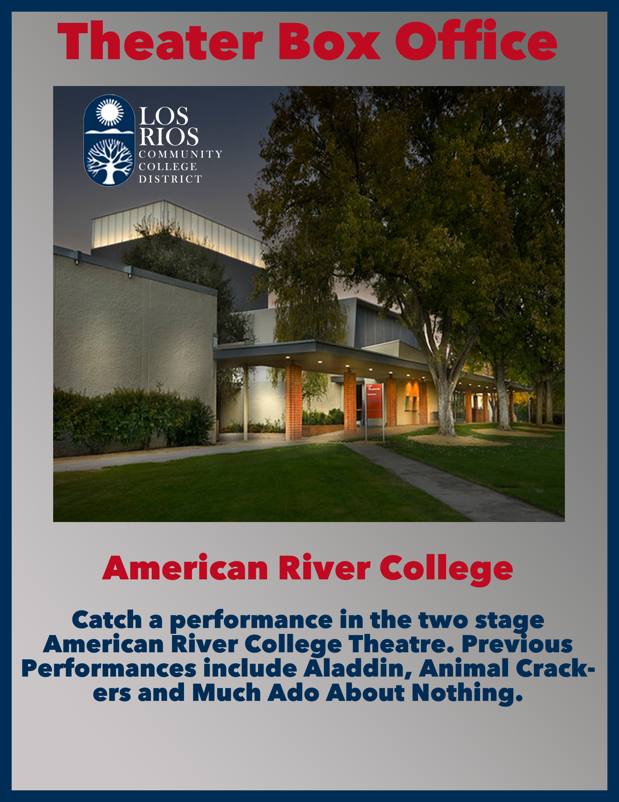
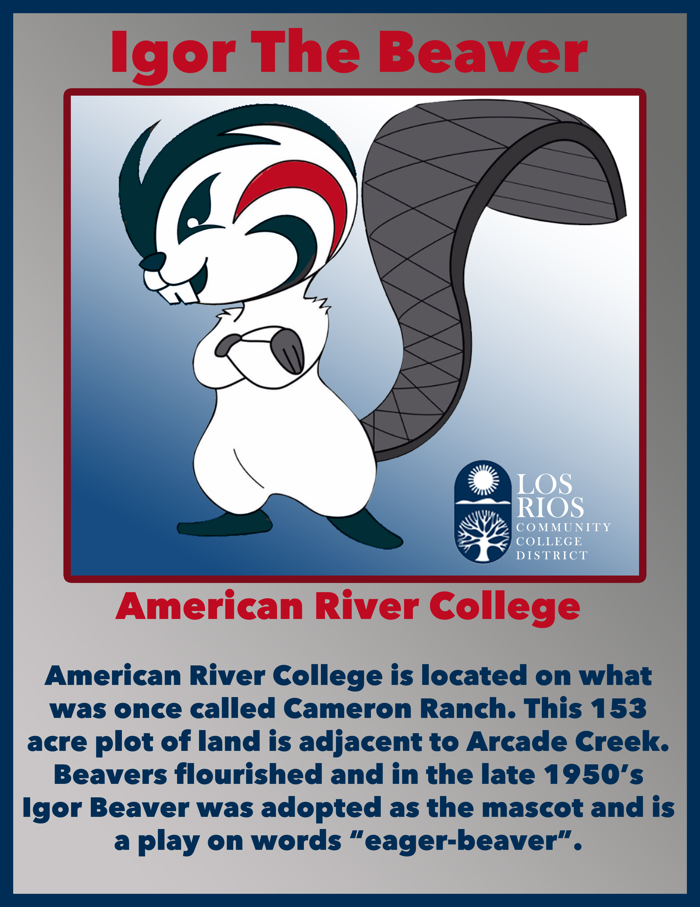

Take in a women's lacrosse game and hear the Tavernetti Bell ring in the Victories.
UC Davis Health Stadium

Bring your picnic basket, a blanket and enjoy the open grassy field with great views of Lake Spafford.
Arboretum

UC Davis Project to Honor Native Americans.
Occupied Patwin Land

Hangout on the banks of Putah Creek in Yolo County, enjoy a cosy fire and roast marshmellows on a stick!
Outdoor Theater and Fire Pit

Check out textbooks for a class, print a paper in the computer lab or enjoy the screened in patio.
Bookshelves, Private Study Rooms and MORE!

Need help with FASFA? Are you a student with a Disability and need accomodations? Then don't forget to stop by Student Services.
DSPS, EOPS and much more.

Catch a football game,watch a track meet or experince graduation outdoors. The Beaver Stadium hosts it all.
Calling all sports fans!

Two stages for performances means this theater has options. Catch a performance of the ARC Orchestra or watch a play.
Figaro! Figaro!

Only the best can tame this Mustang!

A cuddly Beaver to call your own. Awarded with a sucessful completion of the American River College Treasure Hunt.